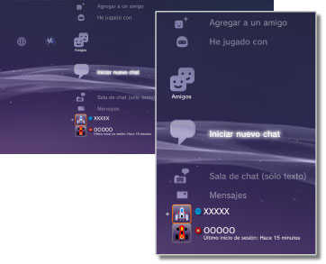

Amigos > Categoría Amigos
Categoría Amigos
Para utilizar esta función, debe mantener siempre el software del sistema actualizado con la versión más reciente.
Puede enviar o recibir mensajes, o realizar chats con otro usuario de PS3™ mediante PlayStation®Network. Deberá crear una cuenta de (registrarse en) PlayStation®Network para poder utilizar estas funciones. En el menú  (Amigos) se muestran los siguientes iconos. Los iconos pueden variar en función de las condiciones de uso.
(Amigos) se muestran los siguientes iconos. Los iconos pueden variar en función de las condiciones de uso.

 |
Lista de bloqueo | Permite visualizar los usuarios de su lista de bloqueo. |
|---|---|---|
 |
Agregar a un amigo | Permite enviar una solicitud para agregar a un usuario a su lista de amigos. |
 |
He jugado con | Consulte una lista de las personas con las que ha jugado a juegos online de formato PlayStation®3*. Seleccione este icono para enviar un mensaje a un jugador o para realizar una solicitud para agregar a un amigo. |
 |
Iniciar nuevo chat | Permite iniciar un chat. |
 |
Sala de chat (sólo texto) | Este icono se muestra cuando hay una sala de chat para chat de texto. Si se añade una nueva sala de chat, aparece  . . |
 |
Sala de chat de voz/vídeo | Este icono se muestra durante un chat de voz o vídeo. |
 |
Mensajes | Permite crear mensajes nuevos y consultar los mensajes recibidos y enviados. |
 |
(su ID online) | Aquí se mostrará el avatar que ha seleccionado al crear la cuenta de PlayStation®Network. |
|
(Nombre del amigo) | Este icono representa a una persona de su lista de amigos. Si selecciona este icono, podrá enviar y recibir mensajes o chatear con amigos. |
| * |
Algunos juegos no admiten esta función. |
|---|
Notas
- En el sistema PS3™, los usuarios que se encuentran en su lista de amigos se denominan "Amigos". Asimismo, los mensajes de correo electrónico que envíe o reciba en la categoría (Amigos) se denominan "mensajes".
- Es posible visualizar hasta 50 jugadores en
 (He jugado con). Una vez alcanzado este límite, cada vez que se agregue un nuevo jugador, se eliminará la entrada más antigua automáticamente.
(He jugado con). Una vez alcanzado este límite, cada vez que se agregue un nuevo jugador, se eliminará la entrada más antigua automáticamente. - Para realizar un chat de voz, necesita un dispositivo de entrada y salida de audio (como, por ejemplo, unos auriculares con micrófono, que se venden por separado). Para realizar un chat de vídeo, necesitará además una cámara USB (se vende por separado).
- En el sistema PS3™ es posible utilizar auriculares con micrófono USB, auriculares con micrófono Bluetooth®, una cámara USB EyeToy™, PlayStation®Eye o una cámara USB compatible con USB video class (UVC).
- Cuando conecte una cámara USB mediante un concentrador USB, utilice un concentrador compatible con USB 2.0. Si utiliza un concentrador no compatible con USB 2.0, es posible que se produzca una degradación de la imagen o que ésta no se visualice.
- Para obtener información acerca de los periféricos compatibles y las instrucciones de uso, póngase en contacto con el distribuidor de éstos.